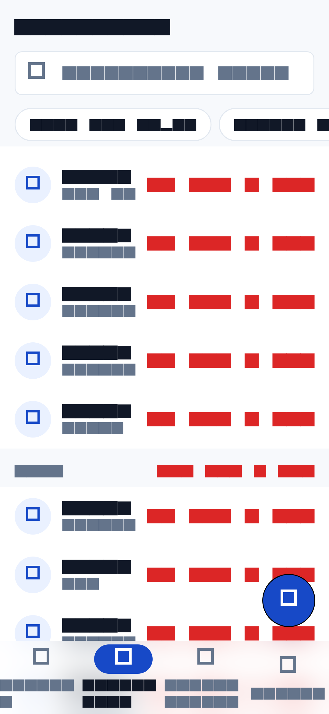
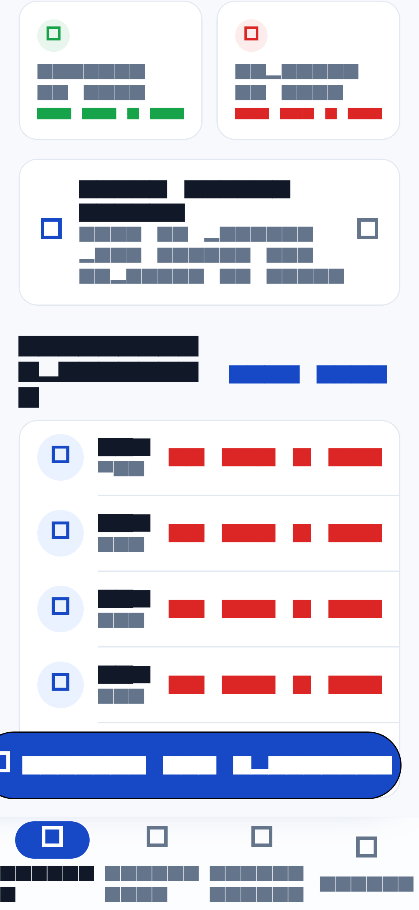
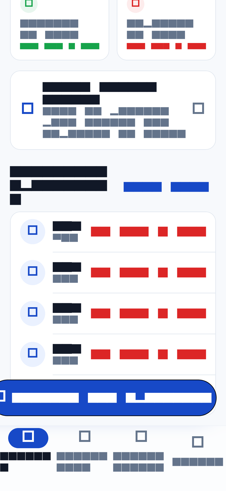
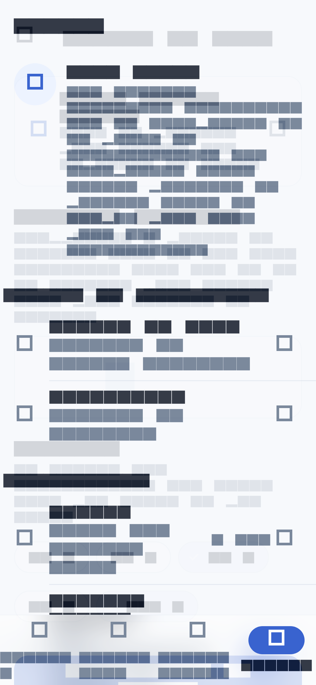
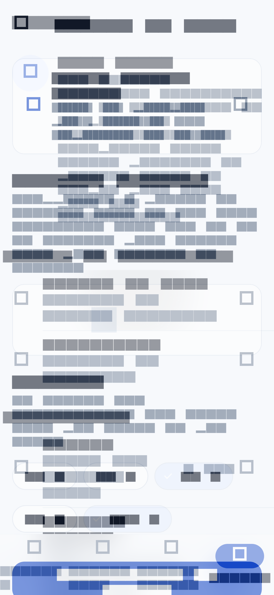
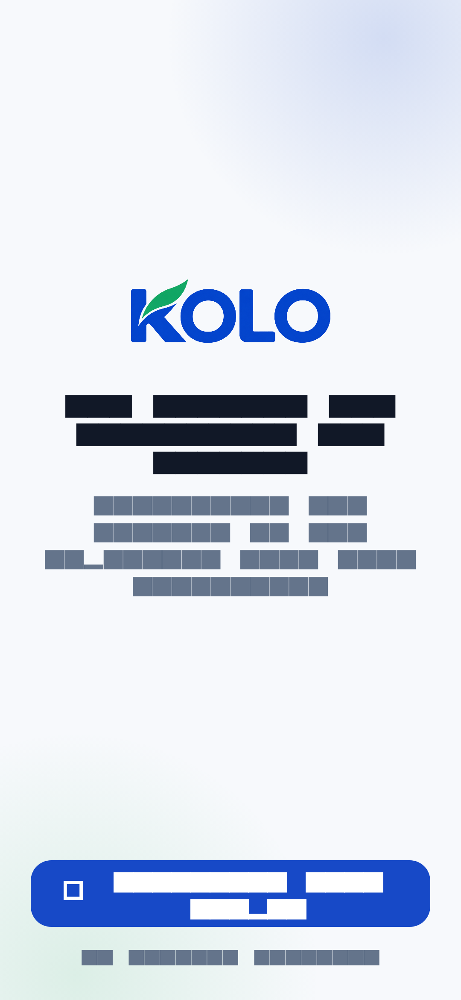

Vérification visuelle · 11 octobre 2026 · Flutter 3.47
Six captures prises dans l'application réelle pour voir le flou de la barre d'onglets et les transitions de page, sans passer par un téléphone.
Comment lire ces images. Elles sortent du moteur de test de Flutter (flutter test --update-goldens test/preview/apercu.dart), pas d'un appareil. Ce moteur remplace la police par une police de test : tout le texte s'affiche en blocs pleins, et les pictogrammes Material en carrés vides. Tout le reste est bien le vrai rendu, calculé par Skia : couleurs, flou, image du logo, positions, tailles.
Elles ont été prises avec des données de démonstration saisies par le harnais de test, jamais des données de l'application.
La barre laisse passer le contenu qui défile dessous : le voile était à 85 % d'opacité, ce qui la rendait blanche et opaque. À 62 %, on voit encore les lignes passer sous le verre sans que les libellés d'onglets perdent en lisibilité. Un liseré de 0,5 px marque le haut de la barre.



La réserve en bas des listes était figée à 96 dp. Avec une barre système de 24 dp, 8 dp de la dernière ligne disparaissaient sous le flou. Elle suit maintenant la hauteur réelle de la barre : MediaQuery.paddingOf(context).bottom + 16, soit toujours 96 dp sur un téléphone sans barre système.
Chaque page poussée entre en fondu et en léger glissement depuis le bas (3,5 % de la hauteur), sur 220 ms : la durée maximale fixée au §2.3 du cahier des charges, là où la transition Material par défaut en prendrait 300.


Aucune transition ne jouait, nulle part. go_router 18 ne reconnaît pas le MaterialApp de cette version de Flutter : les routes déclarées avec builder: recevaient une page sans aucune animation, de durée zéro. La transition était donc du code mort, sauf sur les deux écrans déclarés autrement. Les pages passent désormais par koloPage(...), vérifié route par route.
L'écran d'entrée ne contient plus de lien vers la politique de confidentialité. La seule entrée qui reste est Profil → À propos → Politique de confidentialité.

Sur l'accueil, les blocs apparaissent en cascade au premier affichage : chacun démarre 7 % de la durée après le précédent, sur 420 ms, avec un fondu et un décalage de 14 px. Cette animation n'est pas capturée ici, car l'écran est déjà stabilisé quand le harnais prend la photo. Le réglage système « réduire les animations » la neutralise, comme les transitions de page.